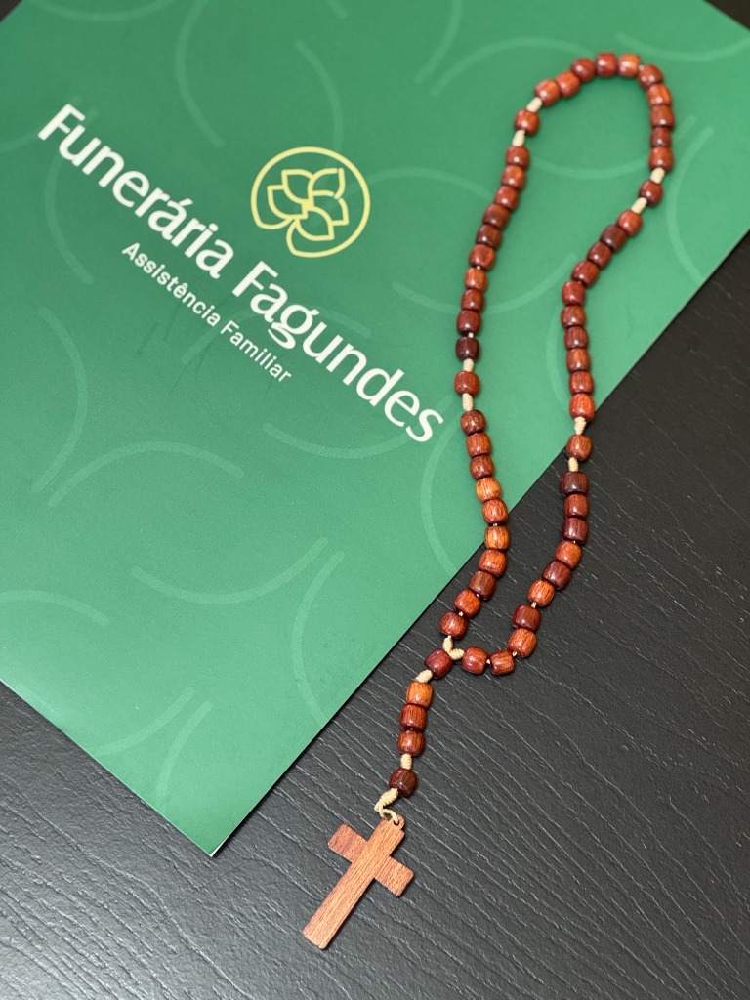
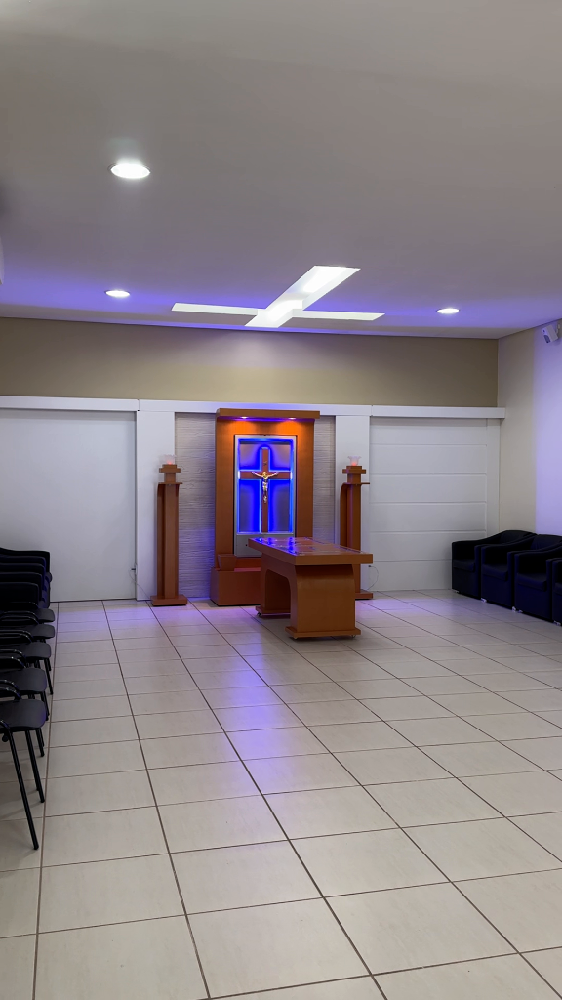
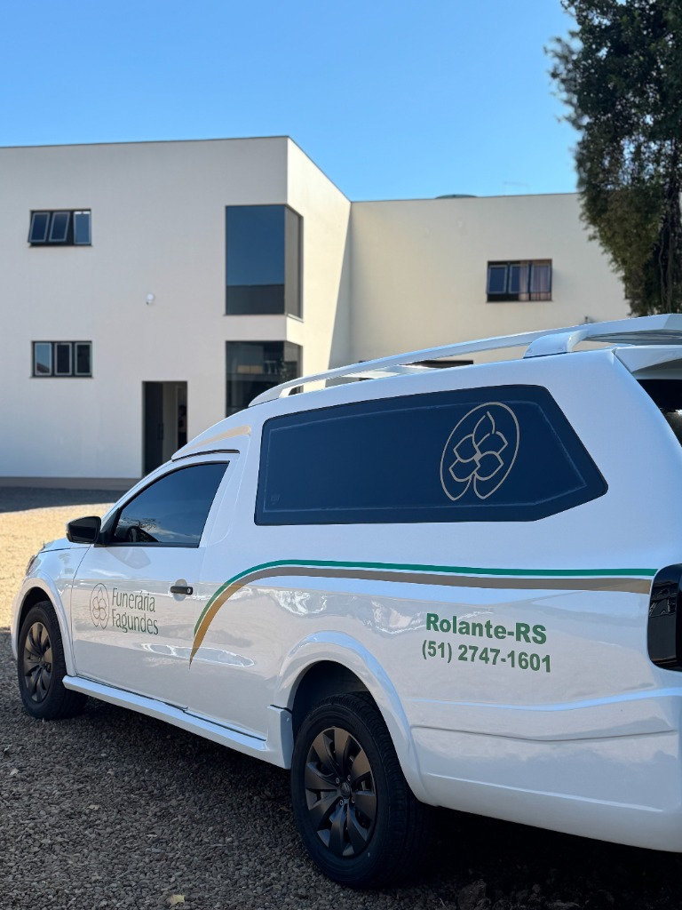
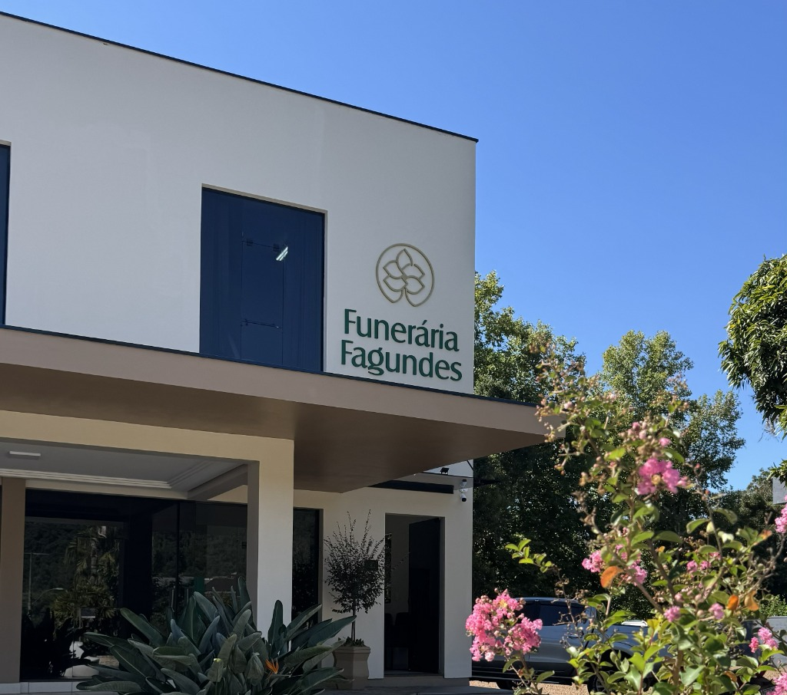

Serviços Completos e Humanizados
Oferecemos acolhimento e dignidade em todos os momentos, com uma estrutura preparada para honrar histórias e apoiar famílias em Rolante, RS.


Funeral
Através do Cerimonial de Despedida, nossa equipe auxilia as famílias enlutadas em suas reflexões sobre a ausência de seu ente querido, ajudando no ajuste à nova realidade e no início do processo de luto.
Cremação
Oferecemos todo o encaminhamento e orientação necessária junto ao crematório ou cemitério selecionado pela família na localidade de sua preferência.

Documentação
Gestão de todo o processo documental para a liberação, em cartórios locais ou órgãos governamentais nacionais e internacionais.

Missa de 7º dia
Acompanhamento da missa marcada pela família, com fornecimento de material de agradecimento pela presença dos participantes.

Participação de
Falecimento
Publicação em jornais e/ou veiculação em rádios para informar a comunidade e sociedade sobre o falecimento e homenagear.

Decoração
de Capela
Preparo da capela velatória com ornamentos e flores de qualidade para proporcionar um ambiente acolhedor e digno para a cerimônia.

Translado
Estrutura completa para repatriação e sepultamento em outras localidades, assumindo todos os trâmites legais via múltiplos transportes.
